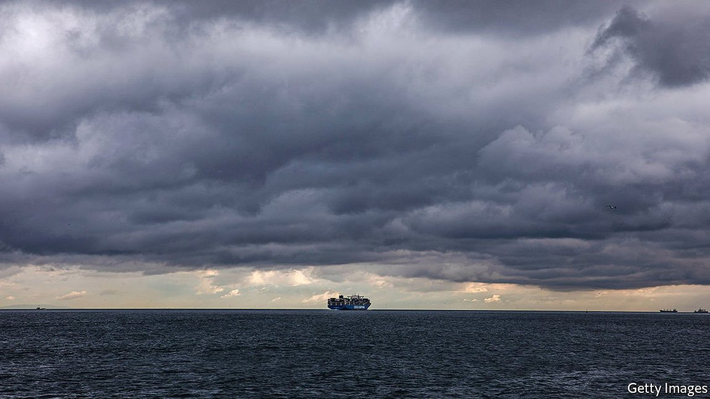
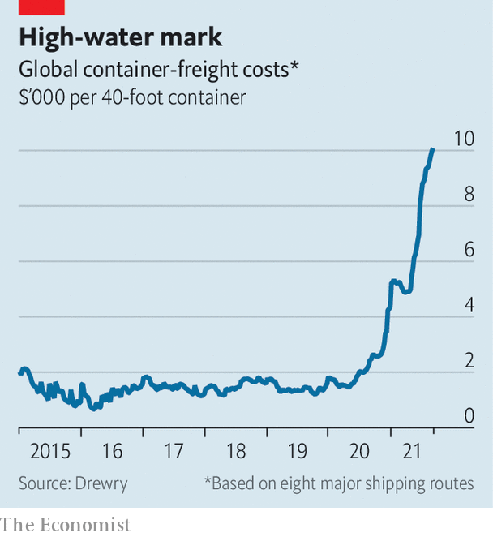
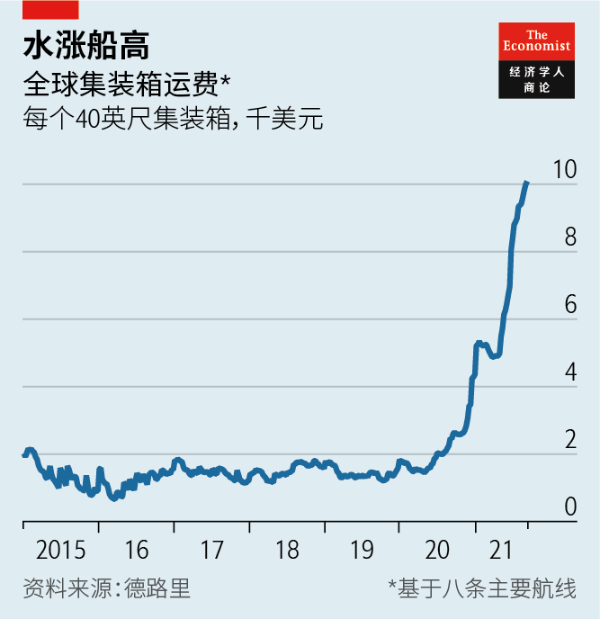
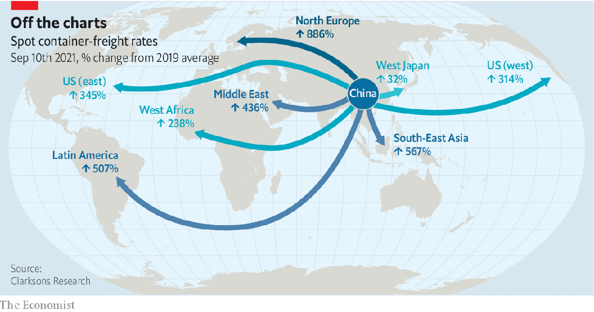
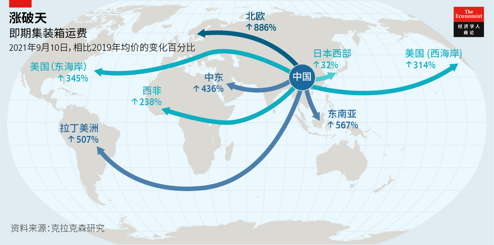

2021-09-26T13:56:57+00:00
Turbulent waters
波涛汹涌
波濤洶湧
A perfect storm for container shipping
集装箱航运业的完美风暴
集裝箱航運業的完美風暴
Will prolonged disruptions shift the pattern of trade?
旷日持久的混乱会改变贸易形态吗？
曠日持久的混亂會改變貿易形態嗎？
A GIANT SHIP wedged across the Suez canal, record-breaking shipping rates, armadas of vessels waiting outside ports, covid-induced shutdowns: container shipping has rarely been as dramatic as it has in 2021. The average cost of shipping a standard large container (a 40-foot-equivalent unit, or FEU) has surpassed $10,000, some four times higher than a year ago (see chart). The spot price for sending such a box from Shanghai to New York, which in 2019 would have been around $2,500, is now nearer $15,000. Securing a late booking on the busiest route, from China to the west coast of America, could cost $20,000.
一艘巨轮搁浅卡死苏伊士运河。运费破纪录。船只在港口外大排长龙。新冠病毒引发停工。集装箱航运业很少像2021年这样跌宕起伏。运输一个标准大集装箱（40英尺，即一个FEU）的平均成本已超过一万美元，比一年前高出四倍左右（见图表）。 将这样一个集装箱从上海运到纽约的即期运费在2019年约为2500美元，现在接近1.5万美元。在中国到美国西海岸这条最繁忙的航线上，临时订舱的运费可能高达两万美元。
一艘巨輪擱淺卡死蘇伊士運河。運費破紀錄。船隻在港口外大排長龍。新冠病毒引發停工。集裝箱航運業很少像2021年這樣跌宕起伏。運輸一個標準大集裝箱（40英尺，即一個FEU）的平均成本已超過一萬美元，比一年前高出四倍左右（見圖表）。 將這樣一個集裝箱從上海運到紐約的即期運費在2019年約為2500美元，現在接近1.5萬美元。在中國到美國西海岸這條最繁忙的航線上，臨時訂艙的運費可能高達兩萬美元。
In response, some companies are resorting to desperate measures. Peloton, a maker of pricey exercise bikes, is switching to air freight. But costs are also sky-high as capacity, half of it usually provided in the holds of passenger jets, is constrained by curbs on international flights. Home Depot and Walmart, two American retailers, have chartered ships directly. Pressing inappropriate vessels into service has proved near-calamitous. An attempt in July to carry containers on a bulk carrier, which generally carts coal or iron ore, was hastily abandoned when the load shifted, forcing a return to port. More containers are travelling across Asia by train. Some are even reportedly being trucked from China to Europe then shipped across the Atlantic to avoid clogged Chinese ports.
因此，一些公司正诉诸于非常措施。高端健身自行车制造商Peloton正在转向空运。但空运成本也很高，因为空运的运力（通常有一半来自客机的货舱）因国际航班限飞而受限。美国零售商家得宝（Home Depot）和沃尔玛直接自己包船。调用不适用的船只的结果几乎是灾难性的。7月曾有公司试图用通常运煤或铁矿石的散装货船运集装箱，但集装箱在船上发生移位，结果不得不仓促放弃，返回港口。越来越多的集装箱通过铁路穿越亚洲。据报道，有些集装箱甚至是先用卡车从中国运到欧洲，然后再海运跨过大西洋，以绕过拥堵的中国港口。
因此，一些公司正訴諸於非常措施。高端健身自行車製造商Peloton正在轉向空運。但空運成本也很高，因為空運的運力（通常有一半來自客機的貨艙）因國際航班限飛而受限。美國零售商家得寶（Home Depot）和沃爾瑪直接自己包船。調用不適用的船隻的結果幾乎是災難性的。7月曾有公司試圖用通常運煤或鐵礦石的散裝貨船運集裝箱，但集裝箱在船上發生移位，結果不得不倉促放棄，返回港口。越來越多的集裝箱通過鐵路穿越亞洲。據報道，有些集裝箱甚至是先用卡車從中國運到歐洲，然後再海運跨過大西洋，以繞過擁堵的中國港口。
Trains, planes and lorries can only do so much, especially when it comes to shifting goods halfway around the planet. Container ships lug around a quarter of the world’s traded goods by volume and three-fifths by value. The choice is often between paying up and suffering delays, or not importing at all. Globally 8m TEUS (20-foot-equivalent units) are in port or waiting to be unloaded, up by 10% year-on-year. At the end of August over 40 container ships were anchored off Los Angeles and Long Beach. These serve as car parks for containers, says Eleanor Hadland of Drewry, a shipping consultancy, in order to avoid clogging ports that in turn lack trains or lorries to shift goods to warehouses that are already full. The “pinch point”, she adds, “is the entire chain”.
火车、飞机和卡车的运力有限，尤其是要跨越半个地球运输货物时。集装箱船运输的贸易货物约占全球总量的四分之一和总价值的五分之三。现在的选择通常只能是要么支付高价并忍受延误，要么干脆别进口。全球有800万个TEU（20英尺标准集装箱）的集装箱停在港内或等待卸货，同比增加了10%。8月底，40多艘集装箱船在洛杉矶和长滩外等待泊位。这些船充当集装箱的停车场，以避免堵塞港口，港口没有足够的火车或卡车把货物转运到仓库，而且仓库也已经爆满，航运咨询公司德路里（Drewry）的埃莉诺·哈德兰 （Eleanor Hadland) 表示。“夹点是一整个链条”，她说。
火車、飛機和卡車的運力有限，尤其是要跨越半個地球運輸貨物時。集裝箱船運輸的貿易貨物約佔全球總量的四分之一和總價值的五分之三。現在的選擇通常只能是要麼支付高價並忍受延誤，要麼乾脆別進口。全球有800萬個TEU（20英尺標準集裝箱）的集裝箱停在港內或等待卸貨，同比增加了10%。8月底，40多艘集裝箱船在洛杉磯和長灘外等待泊位。這些船充當集裝箱的停車場，以避免堵塞港口，港口沒有足夠的火車或卡車把貨物轉運到倉庫，而且倉庫也已經爆滿，航運諮詢公司德路里（Drewry）的埃莉諾·哈德蘭 （Eleanor Hadland) 表示。“夾點是一整個鏈條”，她說。
For years container shipping kept supply chains running and globalisation humming. Shipping was “so cheap that it was almost immaterial”, says David Kerstens of Jefferies, a bank. But disruption after disruption means that the metal boxes are losing their reputation for low prices and reliability. Few experts think things will get better before early next year. The dislocations could even hasten a reordering of global trade.
多年来，集装箱航运保证了供应链的持续运转和全球化的繁荣。投行杰富瑞（Jefferies）的大卫·克斯滕斯（David Kerstens）表示，海运“成本很低，几乎可以忽略不计”。但一次又一次的混乱局面意味着集装箱低价可靠的名声正在丧失。专家们基本认为情况在明年初之前不会好转。混乱甚至可能加速全球贸易的秩序重组。
多年來，集裝箱航運保證了供應鏈的持續運轉和全球化的繁榮。投行傑富瑞（Jefferies）的大衛·克斯滕斯（David Kerstens）表示，海運“成本很低，幾乎可以忽略不計”。但一次又一次的混亂局面意味着集裝箱低價可靠的名聲正在喪失。專家們基本認為情況在明年初之前不會好轉。混亂甚至可能加速全球貿易的秩序重組。
Shipping is so strained in part because the industry, which usually steams from short-lived boom to sustained bust, was enjoying a rare period of sanity in the run-up to the pandemic. Stephen Gordon of Clarksons, a shipbroker, notes that by 2019 it was showing self-discipline, with the level of capacity and the order book for new ships under control. Then came covid-19. Shipping firms, expecting a collapse in trade, idled 11% of the global fleet. In fact, trade held up and shipping rates started to climb. And, flush with stimulus cash, Americans started to spend.
航运如此吃紧，原因之一是这个行业在疫情前度过了一段罕见的克制期，而它通常的发展周期是在短暂繁荣后进入持续萧条。船运经纪公司克拉克森（Clarksons）的斯蒂芬·戈登（Stephen Gordon）指出，到2019年，航运业表现克制，运力水平和新船订单都受到控制。接着疫情来了。航运公司预计贸易将崩溃，闲置了全球11%的船只。事实上，贸易量持稳，运费开始攀升。而且，手里有了刺激资金的美国人开始消费。
航運如此吃緊，原因之一是這個行業在疫情前度過了一段罕見的剋制期，而它通常的發展周期是在短暫繁榮後進入持續蕭條。船運經紀公司克拉克森（Clarksons）的斯蒂芬·戈登（Stephen Gordon）指出，到2019年，航運業表現克制，運力水平和新船訂單都受到控制。接着疫情來了。航運公司預計貿易將崩潰，閑置了全球11%的船隻。事實上，貿易量持穩，運費開始攀升。而且，手裡有了刺激資金的美國人開始消費。
In the first seven months of 2021, cargo volumes between Asia and North America were up by 27% compared with pre-pandemic levels, according to BIMCO, a shipowners’ association. Port throughput in America was 14% higher in the second quarter of 2021 than in 2019. There has been little growth elsewhere: throughput in northern Europe is 1% lower. Yet rates on all routes have rocketed (see map), because ships have set sail to serve lucrative transpacific trade, starving others of capacity.
根据波罗的海国际航运理事会（BIMCO）的数据，2021年前七个月，亚洲和北美之间的货运量与疫情前相比增长了27%。2021年第二季度，美国的港口吞吐量比2019年高14%。其他地方几乎没有增长，北欧的吞吐量还降低了1%。然而，所有航线的运费都已飙升（见地图），因为船只都跑去服务利润丰厚的跨太平洋贸易，导致其他航线运力不足。
根據波羅的海國際航運理事會（BIMCO）的數據，2021年前七個月，亞洲和北美之間的貨運量與疫情前相比增長了27%。2021年第二季度，美國的港口吞吐量比2019年高14%。其他地方几乎沒有增長，北歐的吞吐量還降低了1%。然而，所有航線的運費都已飆升（見地圖），因為船隻都跑去服務利潤豐厚的跨太平洋貿易，導致其他航線運力不足。
A system stretched to its limits is subject to a “cascading effect”, says Eytan Buchman of Freightos, a digital-freight marketplace. Rerouting and rescheduling would once have mitigated the closure of part of Yantian, one of China’s biggest ports, in May and then Ningbo, another port, in August after covid-19 outbreaks. But without spare capacity, that is impossible. “All ships that can float are deployed,” remarks Soren Skou, boss of Maersk, the world’s biggest container-shipping firm. Empty containers are in all the wrong places. Port congestion puts ships out of service. The average door-to-door shipping time for ocean freight has gone from 41 days a year ago to 70 days, says Freightos.
数字货运市场Freightos的埃坦·布赫曼（Eytan Buchman）表示，一个拉到极限的系统容易出现“级联效应”。中国最大港口之一的盐田港以及另一个港口宁波港分别在5月和8月因出现新冠病例而局部封锁。在过去，这对货运造成的影响可以通过调整航线和变更行程缓解。但目前没有备用运力，没法做这样的调整。“所有能开的船都已经派出去了。”全球最大的集装箱航运公司马士基（Maersk）的老板施索仁（Soren Skou）说。空集装箱都没收回来。港口拥堵使船舶无法投入运输。Freightos表示，海运的平均门到门运输时间已从一年前的41天延长到70天。
數字貨運市場Freightos的埃坦·布赫曼（Eytan Buchman）表示，一個拉到極限的系統容易出現“級聯效應”。中國最大港口之一的鹽田港以及另一個港口寧波港分別在5月和8月因出現新冠病例而局部封鎖。在過去，這對貨運造成的影響可以通過調整航線和變更行程緩解。但目前沒有備用運力，沒法做這樣的調整。“所有能開的船都已經派出去了。”全球最大的集裝箱航運公司馬士基（Maersk）的老闆施索仁（Soren Skou）說。空集裝箱都沒收回來。港口擁堵使船舶無法投入運輸。Freightos表示，海運的平均門到門運輸時間已從一年前的41天延長到70天。
Some observers think normality may return after Chinese new year next February. Peter Sand of BIMCO says disruptions could even take a year to unwind. Lars Jensen of Vespucci Maritime, an advisory firm, notes that a dockers’ strike on America’s west coast in 2015 caused similar disruption, albeit only in the region. It still took six months to unwind the backlog.
一些观察人士认为，到明年2月中国农历新年后情况可能会恢复正常。BIMCO的彼得·桑德（Peter Sand）表示，混乱局面甚至可能要持续一年才能缓解。咨询公司Vespucci Maritime的拉尔斯·詹森（Lars Jensen）指出，2015年美国西海岸的码头工人罢工造成了类似的混乱，不过影响仅限于该地区。即便如此，当时仍用了六个月的时间才清理完积压的货物。
一些觀察人士認為，到明年2月中國農曆新年後情況可能會恢復正常。BIMCO的彼得·桑德（Peter Sand）表示，混亂局面甚至可能要持續一年才能緩解。諮詢公司Vespucci Maritime的拉爾斯·詹森（Lars Jensen）指出，2015年美國西海岸的碼頭工人罷工造成了類似的混亂，不過影響僅限於該地區。即便如此，當時仍用了六個月的時間才清理完積壓的貨物。
On the demand side much depends on whether the American consumer’s appetite for buying stuff continues. Although retail sales fell in July, they are still 18% above pre-pandemic levels, points out Oxford Economics, a consultancy. But even if American consumer demand slackens, firms are set to splurge as they restock inventories depleted by the buying spree and prepare for the holiday season at the end of the year. And there are signs that demand in Europe is picking up.
在需求这一侧，美国消费者的购买欲望是否会持续很关键。咨询公司牛津经济研究院（Oxford Economics）指出，尽管7月零售额下滑，但仍比疫情前的水平高出18%。但即使美国消费者需求减少，企业接下来应该会开始大笔支出，因为它们要补充因消费热潮而耗尽的库存，并为年底的节日季做准备。有迹象表明，欧洲的需求正在回升。
在需求這一側，美國消費者的購買慾望是否會持續很關鍵。諮詢公司牛津經濟研究院（Oxford Economics）指出，儘管7月零售額下滑，但仍比疫情前的水平高出18%。但即使美國消費者需求減少，企業接下來應該會開始大筆支出，因為它們要補充因消費熱潮而耗盡的庫存，並為年底的節日季做準備。有跡象表明，歐洲的需求正在回升。
In a sea of uncertainty, one bedrock remains. The industry, flush with profits, is reacting customarily, setting an annual record for new orders for container-ship capacity in less than eight months of this year, says Mr Sand. But with a two-to-three-year wait, this release valve will not start to operate until 2023. And the race to flood the market may not match torrents of the past. There are far fewer shipyards today: 120 compared with around 300 in 2008, when the previous record was set. And shipping, responsible for 2.7% of global carbon-dioxide emissions, is under pressure to clean up its act. Tougher regulations come into force in 2023.
海上风云变幻，但有一样东西稳如磐石。桑德表示，利润丰厚的航运业正在做出习惯性反应：在今年不到八个月的时间里，集装箱船的年度新订单已创下纪录。但新船交付要等两三年，所以这些泄压阀要到2023年才能开始运作。而且目前的供应能力可能不像以前那样强劲。现在的造船厂要少得多，只有120家，而在2008年创下上一个订单纪录时大约有300家。此外，占到全球二氧化碳排放量2.7%的航运业面临着环保压力。更严格的规定将于2023年生效。
海上風雲變幻，但有一樣東西穩如磐石。桑德表示，利潤豐厚的航運業正在做出習慣性反應：在今年不到八個月的時間裡，集裝箱船的年度新訂單已創下紀錄。但新船交付要等兩三年，所以這些泄壓閥要到2023年才能開始運作。而且目前的供應能力可能不像以前那樣強勁。現在的造船廠要少得多，只有120家，而在2008年創下上一個訂單紀錄時大約有300家。此外，佔到全球二氧化碳排放量2.7%的航運業面臨著環保壓力。更嚴格的規定將於2023年生效。
The upshot is that the industry “will remain cyclical”, but with rates normalising at a higher level, says Maersk’s Mr Skou. Discipline in both ordering and managing capacity may prove more permanent, aided by consolidation within the industry.
其结果就是航运业“将保持周期性”，但更高的运费会成为常态，马士基的施索仁表示。在行业整合的帮助下，订购和管理船只上的克制可能会更加持久。
其結果就是航運業“將保持周期性”，但更高的運費會成為常態，馬士基的施索仁表示。在行業整合的幫助下，訂購和管理船隻上的剋制可能會更加持久。
The impact of higher shipping costs depends on the good being transported. Those hoping to import cheap and bulky things like garden furniture might be in for a long wait. Mr Buchman notes that current spot rates might add $1,000 to the price of a sofa travelling from China to America. The effects on product prices so far may have been dampened: around 60% of goods are subject to contractual arrangements with shipping rates agreed in advance and only 40% to soaring spot prices.
运输成本增加造成多大影响取决于运的是什么货。那些希望进口花园家具等廉价大件商品的人可能要等上很久。布赫曼指出，目前从中国运往美国的一只沙发，售价里可能要包含1000美元的即期运费。到目前为止，对产品价格的影响可能被抑制，约60%的货物的运费已经提前在合同中商定，只有40%的货物受即期运费飙升的影响。
運輸成本增加造成多大影響取決於運的是什麼貨。那些希望進口花園傢具等廉價大件商品的人可能要等上很久。布赫曼指出，目前從中國運往美國的一隻沙發，售價里可能要包含1000美元的即期運費。到目前為止，對產品價格的影響可能被抑制，約60%的貨物的運費已經提前在合同中商定，只有40%的貨物受即期運費飆升的影響。
Boxed in
涨无再涨
漲無再漲
Nonetheless, for most products, shipping costs tend to be a small percentage of the overall cost. The boss of a large global manufacturer based in Europe says the extreme costs now are “bearable”. Nor might shipping rates rise much more even if disruptions continue. CMA CGM, the third-largest container-shipping firm in the world, stunned industry watchers on September 9th when it said that it would cap spot rates for ocean freight. Hapag-Lloyd, the fifth-largest, rapidly followed suit.
尽管如此，对于大多数产品，运输成本往往只占总成本的一小部分。一家总部位于欧洲的大型全球制造商的老板表示，现在的极端成本“尚可承受”。而即使混乱局面持续，运费也可能不会再上涨太多。全球第三大集装箱航运公司达飞（CMA CGM）在9月9日表示将对海运即期运费设定上限，此举震惊了行业观察人士。第五大航运公司赫伯罗特（Hapag-Lloyd）很快跟风。
儘管如此，對於大多數產品，運輸成本往往只佔總成本的一小部分。一家總部位於歐洲的大型全球製造商的老闆表示，現在的極端成本“尚可承受”。而即使混亂局面持續，運費也可能不會再上漲太多。全球第三大集裝箱航運公司達飛（CMA CGM）在9月9日表示將對海運即期運費設定上限，此舉震驚了行業觀察人士。第五大航運公司赫伯羅特（Hapag-Lloyd）很快跟風。
Decarbonisation costs mean rates will eventually settle at higher levels than those before the pandemic. Yet research by Maersk suggests that this may not affect customers much. Even if sustainable fuel cost three times as much as the dirty stuff, increasing per-container fuel costs to $1,200 across the Pacific, for a container loaded with 8,000 pairs of trainers, the impact on each item would be minimal.
脱碳成本意味着运费最终将稳定在比疫情前更高的水平上。然而马士基的研究表明，这可能不会对客户产生太大的影响。即便可持续燃料的成本达到污染性燃料的三倍，让跨太平洋运输一个集装箱的燃料成本增加到1200美元，就一个装有8000双运动鞋的集装箱而言，平均到每双鞋的影响也是微乎其微的。
脫碳成本意味着運費最終將穩定在比疫情前更高的水平上。然而馬士基的研究表明，這可能不會對客戶產生太大的影響。即便可持續燃料的成本達到污染性燃料的三倍，讓跨太平洋運輸一個集裝箱的燃料成本增加到1200美元，就一個裝有8000雙運動鞋的集裝箱而言，平均到每雙鞋的影響也是微乎其微的。
Instead it is the problem of reliability that may change the way firms think. “Just in time” may give way to “just in case”, says Mr Sand, as firms guard against supply shortages by building inventories far above pre-pandemic levels. Reliability and efficiency might also be hastened by the use of technology in an industry that has long resisted its implementation. As Fraser Robinson of Beacon, another digital freight forwarder, points out, supply chains can be made sturdier by using data to provide better “visibility” such as over which suppliers and shipping companies do a better or worse job of keeping to timetables and ordering goods earlier.
实际上，可能会改变公司思考方式的是可靠性问题。桑德表示，“及时够用”的思路可能会让位给“以防万一”，很多公司建立起远高于疫情前水平的库存，以防供应短缺。在一个长期拒绝高科技的行业里，技术的运用也可能会加速改善可靠性和效率。正如另一家数字货运代理公司Beacon的弗雷泽·罗宾逊（Fraser Robinson）指出的那样，使用数据来提供更好的业务“能见度”，比如了解供应商和航运公司在遵守时间表和提前订货方面的优劣表现，可以使供应链更加稳固。
實際上，可能會改變公司思考方式的是可靠性問題。桑德表示，“及時夠用”的思路可能會讓位給“以防萬一”，很多公司建立起遠高於疫情前水平的庫存，以防供應短缺。在一個長期拒絕高科技的行業里，技術的運用也可能會加速改善可靠性和效率。正如另一家數字貨運代理公司Beacon的弗雷澤·羅賓遜（Fraser Robinson）指出的那樣，使用數據來提供更好的業務“能見度”，比如了解供應商和航運公司在遵守時間表和提前訂貨方面的優劣表現，可以使供應鏈更加穩固。
There is so far little evidence of “nearshoring”, except in the car industry, says Mr Skou. But the combination of trade war, geopolitics and covid-19 may together lead trade patterns to tilt away from China. Some Chinese firms and the companies they supply are relocating production to lower-cost countries to diversify supply chains and circumvent trade barriers. Mr Kerstens of Jefferies notes that after America under President Donald Trump imposed tariffs on China the volume of trade from China to America fell by 7% in 2019, but American imports remained stable overall as places like Vietnam and Malaysia took up the slack. Hedging against covid-19 shutdowns, particularly given China’s zero tolerance for infections, could provide another reason to move away.
施索仁说，到目前为止，除了汽车行业外，几乎没有看到“近岸外包”的迹象。但贸易战、地缘政治和新冠疫情的综合作用可能会导致贸易模式绕开中国。一些中国公司及其客户正在将生产转移到成本较低的国家，以将供应链多元化，并规避贸易壁垒。杰富瑞的克斯滕斯指出，特朗普领导下的美国政府对中国加征关税后，2019年中国对美国的出口贸易下降了7%，但由于越南和马来西亚等国填补了空缺，美国的进口量总体保持稳定。对冲疫情封锁的影响可能会是供应商撤出中国的另一个理由，尤其是考虑到中国零容忍的防疫政策。
施索仁說，到目前為止，除了汽車行業外，幾乎沒有看到“近岸外包”的跡象。但貿易戰、地緣政治和新冠疫情的綜合作用可能會導致貿易模式繞開中國。一些中國公司及其客戶正在將生產轉移到成本較低的國家，以將供應鏈多元化，並規避貿易壁壘。傑富瑞的克斯滕斯指出，特朗普領導下的美國政府對中國加征關稅後，2019年中國對美國的出口貿易下降了7%，但由於越南和馬來西亞等國填補了空缺，美國的進口量總體保持穩定。對沖疫情封鎖的影響可能會是供應商撤出中國的另一個理由，尤其是考慮到中國零容忍的防疫政策。
For their part, shipping firms may be preparing for more regionalised trade. The order book is bulging for ships of 13,000-15,000 TEU, smaller than the mega-vessels that can only be handled at the biggest ports. Vietnam opened a new deepwater terminal in January, which can handle all but those largest ships.
至于航运公司，它们可能正在为更加区域化的贸易做准备。1.3万至1.5万TEU的船舶订单量越来越大，这些船比只能在最大型港口作业的巨轮要小。越南一个新的深水码头今年1月开始运营，除了那些最大型的船舶，其他所有船只都可在此装卸。
至於航運公司，它們可能正在為更加區域化的貿易做準備。1.3萬至1.5萬TEU的船舶訂單量越來越大，這些船比只能在最大型港口作業的巨輪要小。越南一個新的深水碼頭今年1月開始運營，除了那些最大型的船舶，其他所有船隻都可在此裝卸。
Finding new manufacturers is hard, however, especially for complex products. And building buffers into supply chains is costly. But conversations about deglobalising are said to be starting among some makers of low-cost clothing and commodity goods. If high costs and delays persist, some will judge that the benefits of proximity to suppliers outweigh the costs of bringing in goods made far away. With few alternatives to ships, the only choice will be to move the factories that make them. ■
然而，重新找制造商很难，尤其是复杂产品的制造商。而且在供应链中建立缓冲能力的成本高昂。但据说一些低成本服装和商品制造商已开始讨论去全球化。如果高运输成本和延误持续下去，一些企业会判定，靠近供应商的好处会超过把万水千山之外制造的货物运进来的成本。船舶运输无法替代，唯一的选择将是迁移工厂。
然而，重新找製造商很難，尤其是複雜產品的製造商。而且在供應鏈中建立緩衝能力的成本高昂。但據說一些低成本服裝和商品製造商已開始討論去全球化。如果高運輸成本和延誤持續下去，一些企業會判定，靠近供應商的好處會超過把萬水千山之外製造的貨物運進來的成本。船舶運輸無法替代，唯一的選擇將是遷移工廠。